Discografia.
Tutta la discografia di Provenzano dal 1994 a oggi. Anno per anno: i singoli usciti con il suo nome, i remix fatti per altri, gli alias usati per tanti progetti.
2026
3 singoli2025
3 singoli2024
5 singoli2023
7 singoli2022
5 singoli2021
1 singolo2020
1 singolo2019
2 singoli · 2 alias

2018
3 singoli · 3 remix · 6 aliasGig
con Wlady, T.N.Y.
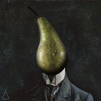
A Little Higher
video
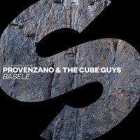
Babele
con The Cube Guys
video

Bailando
remix per Joe Berte', Daniel Tek, El 3mendo
Canta Canta
remix per DJ Shorty
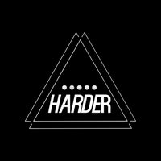
Shine
remix per Margherita Cecchi

Dirty
come Phunkerz
inedito
In Da House
come System3
inedito
Jungle
come System3
inedito
Stress On The Mountain
come Harder+Faster

Dancin'
come System3
inedito
GDN
come Phunkerz
inedito
2017
4 singoli · 2 alias

2016
3 singoli · 2 remix · 2 alias


2015
6 singoli · 2 remix · 4 aliasCalling You
con Simioli, Scarlet
video
Sunshine & Happiness
con Scarlet
video
Ain't No Sunshine
con Simioli, Scarlet
video
Party With You
con Get Far, Jeffrey Jey
video
Take Your Breath
con Andrea Masullo
video
Mork
con Castellari
Carry On
remix per Don Cash
video

Waterfall
remix per Claudio Caccini, Carl Fanini

Be Your
come System3
inedito

Gettin' Up
come Phunkerz
inedito
Oh Song
come Phunkerz
inedito
Pump Up The House
come System3
inedito
2014
6 singoli · 3 remix · 1 alias
Starlight
con Daniele Macchi, Ruby Friedman
inedito
Gorbaciov
Mundoo
con Digital Bounze
You And Me
con Andrea Masullo
video
Just The Way You Are
Believe In Me
con Alex Gaudino, Max C
video

Start It Over
remix per Denny Berland, Alicia Madison
White Tone
remix per Claudio Caccini, Dave P.
La Rumba
remix per Samuel Kimko', Edward Sanchez, Laura S.
Way Out
come System3
inedito
2013
5 singoli · 8 remix · 3 alias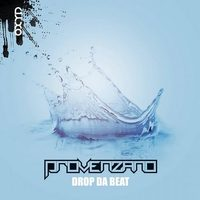
Drop Da Beat
video
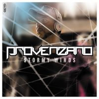
Stormy Winds
video

Be Like Me
con Eako
video
Mash App
con Starclubbers
video
Touch The Sky
con Amanda Wilson
video

Ready For Love
remix per Claudio Caccini, Carl Fanini
Sicko
remix per George Acosta & Henry John Morgan
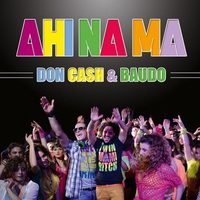
Ahi Na Ma
remix per Don Cash & Baudo
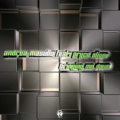
Bringing Me Down
remix per Andrea Masullo
Fiesta
remix per Peppe Roccaro Dj feat. Dario Tiralongo, Lio Asham & Angela
Breakin' The Heart
remix per Andrea Masullo
Party Don't Stop
remix per Sergio Mauri feat. Shelly Poole
video
Fly Away
remix per Claudio Caccini & CeCe Rogers
Overtime
come System3
inedito

Heartquake
come System3
inedito
Tears
come Phunkerz
inedito
2012
3 singoli · 8 remix · 7 aliasTiger
con Alex Addea
video
Turn You On
con Henry John Morgan (HJM), The Audio Dogs
video
You're
con Formal Monkeys
video
Party Go! (feat. Wendy D. Lewis)
remix per Andrea Masullo
You Got To Release
remix per Samuele Sartini & Peyton
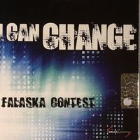
I Can Change
remix per Falaska Contest
video
Dream Girl
remix per Andrea Masullo, Chaka Blackmon
Sound Of Freedom
remix per Sergio Matina & Gabry Sangineto
We Got A Love
remix per Claudio Caccini
Sweet Love
remix per Liviu Hodor feat. Mona
Criminal 4 Love
remix per Jack Ross, Ricky Castelli, LDB, LA19
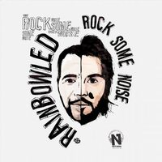
Rock Some Noise
come Rainbowlead
video

Seven Days
come Phunkerz
inedito
Cattivik
come Rainbowlead

Change The World
come Phunkerz
inedito

305
come System3
inedito
Festival
come Phunkerz
inedito
Earthquake
come The Redeemerz
inedito
2011
8 remix · 5 aliasI Like It
remix per Luca Ruco
Desert Rain
remix per Edward Maya feat. Vika Jigulina
Just Believe
remix per Luca Ruco feat. Sherrita
Fantasy
remix per Leonia
Non Ce L'Hai
remix per Monnalisa
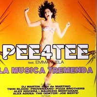
La Musica Tremenda
remix per Pee4Tee feat. Emmanuela
Twilight
remix per Andrea Paci & Francesco Ienco feat. Andrea Love
What The Girls Like
remix per Jaykay feat. Flo Rida, Smokey & Git Fresh

Come Into This Side
come Phunkerz
inedito
From Paris 2 Rome
come System3
inedito
Mariguana Cha-Cha-Cha
come The Fabulous
video

You're On My Own
come System3
inedito
Imagination
come Glideness
2010
1 singolo · 2 remix · 2 alias
2009
5 singoli · 5 remix
Last Night A Dj Saved My Life
con Promise Land
We Save Your Life
con Promise Land
Side By Side
con Andy P
video
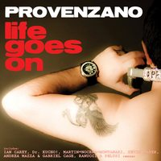
Life Goes On
A.R.I.A.
con Ranucci & Pelusi
I Will Follow
remix per Bingo Players, Dan'thony
video
Leave The World Behind
remix per Axwell / Ingrosso / Angello / Laidback Luke feat. Deborah Cox
Taking Control Of You
remix per Greg Cerrone
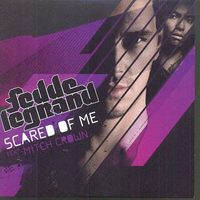
Scared Of Me
remix per Fedde Le Grand feat. Mitch Crown
video
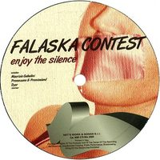
Enjoy The Silence
remix per Falaska Contest
2008
3 singoli · 9 remix · 1 alias
Where Did You Go
con Max C
Chains Of Love
con Max'C
Midory Shower
con Ranucci & Pelusi
Wash The Floor
remix per Supawet

No Stress
remix per Laurent Wolf
Once Again
remix per Falaska Contest
Chi Siamo Noi
remix per Fiorello & Baldini
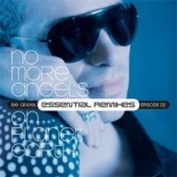
Child
remix per Be Angel
Sex Weed
remix per Juice String

Sunshine
remix per Be Angel
All I Need
remix per Get Far & Sagi Rei
It's True
remix per Axwell, Ingrosso & Salem Al Fakir

Electronique
come Remote Zero
inedito
2007
5 singoli · 3 remix · 3 alias
Ride The Way
con Danijay

Catch Me
con Danijay
Right Or Wrong
con Lizzy B.
video
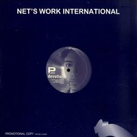
Devotion
I'm Waiting
con Lizzy B.
Say You Love Me
remix per Be Angel feat. Dee Bee
Boom Boom
remix per Haiducii

Miracle
come Mr. Potsie con Lizzy B
inedito
Disfacio Total
come Disco Loco
inedito
Stupid!
come Blastaar
inedito
Monday U Leave Me
remix per Chiara Robiony & The Axcess
2006
1 singolo · 13 remix · 1 aliasVibe
con Lizzy B.
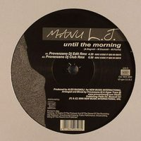
Until The Morning
remix per Manu L.J.
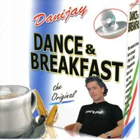
Dance & Breakfast
remix per Danijay
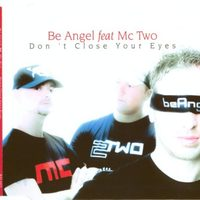
Don't Close Your Eyes
remix per Be Angel
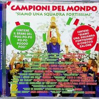
Inno Di Mameli
remix per Cosmo
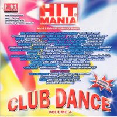
Siamo Una Squadra Fortissimi
remix per Checco Zalone

Speed Of Sound
remix per Club House
L'impazienza
remix per Danijay
C'est L'Amour
remix per Sophie

The Story Goes On
come Italian Deejays
ineditovideo
Don't Leave Me Now
remix per Trilogy
Gigi's Violin
remix per Afterclub
I'll Be Missing You
remix per Afterclub
Poem Without Words
remix per Terminal Dream
Tweak
remix per Groundbeat
2005
3 singoli · 9 remix · 2 alias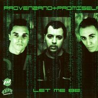
Let Me Be
con Promise Land
Running Up / It's Gonna Be
con Roberto Molinaro
Sound Is Back
con Lizzy B.
video

Red Code
remix per Roberto Molinaro
Feel Alright
remix per Manu L.J.
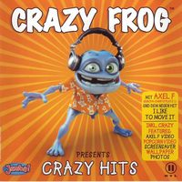
Crazy Hits (Crazy Christmas Edition)
remix per Crazy Frog
More 'N' More (I Love You)
remix per Haiducii
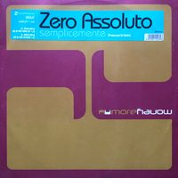
Semplicemente
remix per Zero Assoluto

Disco Sex
come Mr. Ed
inedito

Eurofolk
come Italian Deejays
ineditovideo
Future Mind
remix per Roby Rossini & Maverick
Hearts Entwine
remix per DJ Nick
Live Your Life
remix per Promise Land
Wellfare
remix per Gigi D'Agostino